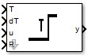

Inputs:
R: logic
dT: numeric
T: numeric
u: logic
Outputs:
y: logic
States:
x: numeric
temp: numeric
Init-Code:
x = 0.0;
Run-Code:
if (R) {
x = T;
}
temp = x;
if(u) {
if(temp > 0.0) {
x = x - dT;
}
}
else {
x = T;
}
y = ((temp <= 0.0) && u);